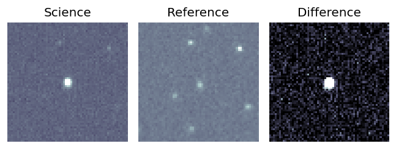
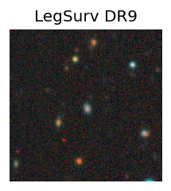
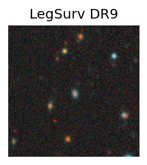
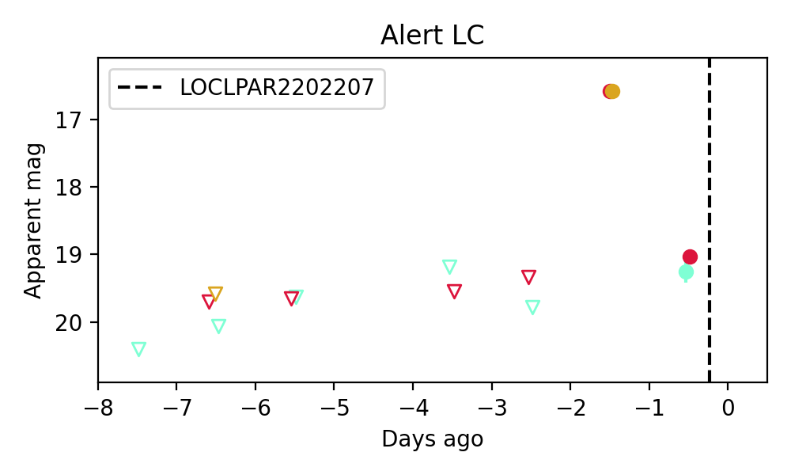

Candidate List 20220221Previous Day Next Day
Section 1: New Sources (age<1d) Section 2: Old (1-5d) sources observed last nightplaceholder
Section 2: Older Sources Observed Last Night (1)
0. ZTF22aabjpxh (Afterglow?FBOT?) (TNS: A) [Back to Top] [Share] [Trigger Swift] [Fritz] [Lasair]RA, Dec: 240.91398, 31.23464 16h 3m39.35s, 31d14m4.70sGalactic (l, b): 50.46192, 48.16838 ext(g-r) = 0.032 

PS1: 0 sources in 3 arcsec
LegacySurvey: 1 sources in 3 arcsec Closest: d = 1.73 arcsec, 202.6 deg (east of north) photoz=0.24 (68% bounds 0.2, 0.27), type=EXP peak abs mag = -23.86 (68% bounds -23.42, -24.15)

Extinction-corrected gr color:
From alerts: 0.2 +/- 0.18 mag
Extinction-corrected ri color:
From alerts: -0.02 +/- 0.05 mag
Consistent with synchrotron, g-r>0!
Rise Rate:
g: 0.27 mag/day
r: 2.67 mag/day
i: 0.59 mag/day
Fade Rate:
g: -99 mag/day
r: 2.41 mag/day
i: -99 mag/day